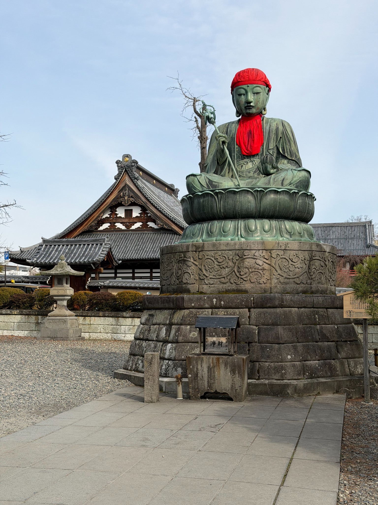
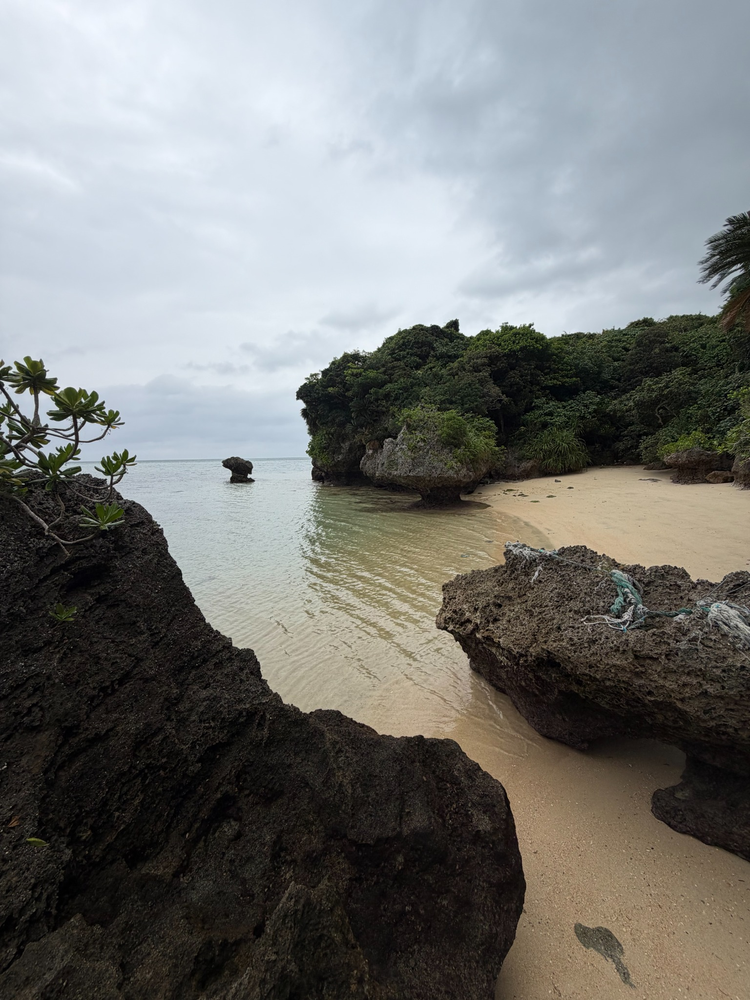

Els nostres viatges
Fotografies, llocs i records.


2026
Japó
27 febrer — 11 abril 2026
De la neu al blau
2026
Dinamarca i Fèroe
12 — 26 agost 2026
Malmö, Copenhaguen, Jutlàndia i illes FèroeFotografies, llocs i records.


27 febrer — 11 abril 2026
De la neu al blau12 — 26 agost 2026
Malmö, Copenhaguen, Jutlàndia i illes Fèroe